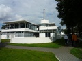
Landgoed Zonnestraal
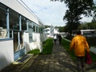
Op de flank van de Utrechtse Heuvelrug, tussen Hilversum en Loosdrecht ligt Landgoed Zonnestraal.
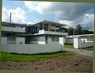
De gebouwen van Duiker
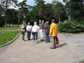
Strategie bespreking
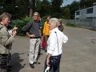
p1000439.jpg
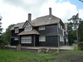
p1000440.jpg
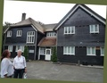
p1000442.jpg
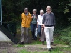
p1000448.jpg
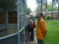
Verblijven/kamertjes van Dienstbodes
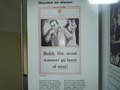
uche-uche (zonder gekheid)
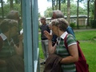
Vroeger, met die dienstbodes, mocht je nooit naar binnen kijken
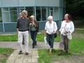
p1000450.jpg
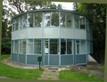
p1000443.jpg
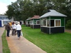
Sanatorium-huisjes waarin mensen soms jaren werden verpleegd/verzorgd
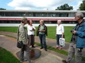
p1000452.jpg
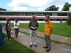
p1000453.jpg
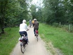
Lekker gefietst, 't weer zat erg mee!
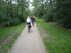
p1000454.jpg
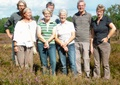
Gezellig stel
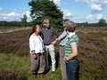
Ook serieuzer onderwerpen kun je dan even rustig doorspreken
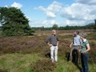
p1000461.jpg
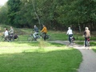
p1000457.jpg
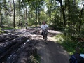
Sommige 'oversteken' waren levensgevaarlijk!
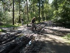
Adri heeft voor hetere vuren gestaan, zo ook Jan G.
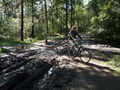
p1000464.jpg
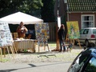
Gewoon, kunst op de stoep en langs de straat
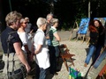
Public workshop
Kun je zien, ze heeft er echt zin in
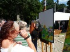
'Doet u nog iets aan de lucht?'
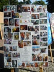
Kunstenares werkt vanuit haar eigen fantasie-wereld (zei ze)
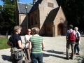
p1000472.jpg
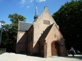
p1000471.jpg
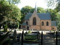
Wat een rust, hier kom je eindelijk op adem...
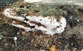
Nee, ontging ons niet
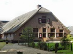
Mooi plekje voor zo'n plaatje alleen, die wolkenloze lucht klopt niet
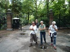
Kasteel Drakensteyn (ook wel geschreven als Drakestein, Drakenstein of Drakensteijn), aan de rand van het dorpje Lage Vuursche bij Baarn
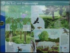
p1000478.jpg
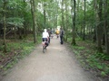
Zo, ijsje genuttigd en dan kun je weer verder
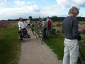
d'Hilversumse hei, wat wonen Adri & Bea toch in een luxe omgeving
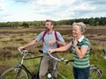
Helemaal uit Almelo, met de fiets en dan nog zo fris!
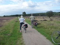
Zo en nu op huis aan en natuurlijk het 'diner', begin al wat trek te krijgen
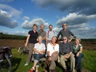
Schitterende luchten in Hilversum (volgende keer een beetje lachen Jan P).
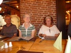
Adri denkt er nog even over na, Willemien weet 't al' en Tiny begint gewoon opnieuw
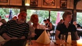
Leuke tent...
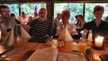
p1000489.jpg
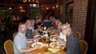
Kwam helemaal goed en smakelijk was het!
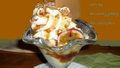
Het ijsje waar ik me over 'ontfermde'. Alles bij elkaar 'voor navolging vatbaar', Adri & Bea Bedankt!